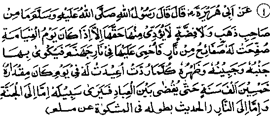
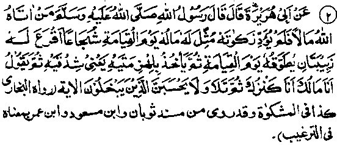
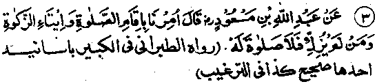

Chapter Five · Section (b): Ahadith threatening punishment for non-payment of Zakaat
Section (b)
Ahadith Threatening Punishment for Nonpayment of Zakaat
1. Punishment for withholding Zakaat

Hadith 1
Rasulullah Sallallaho alaihe wasallam is reported to have said, "If anyone possessing gold or silver does not pay what is due, then, on the Day of Resurrection, his gold and silver will be converted into plates that will be heated in the Fire of Jahannam till they become like plates of fire itself, and then his side, his forehead and his back will be branded with them, again and again, during a Day which will be fifty thousand years long. Thereafter he will go to his destined, Jannah or Jahannam........"
Note: The above quotation forms part of a comprehensive Hadith which describes the various modes in which the owners, of camels, cows, goats, etc., will be punished for non-payment of Zakaat. In Arabia people possessed cattle in large number, while in our country, most people do not generally possess sufficient number of cattle to make Zakaat obligatory; of course, gold and silver and things made thereof are commonly possessed. I have, therefore, given only that part of the Hadith which relates to the owners of gold and silver. One can judge from the Hadith as to how severe will be the torment of those who do not pay Zakaat on their property. On the Day of Resurrection, they will be branded with the plates of gold and silver heated in the fire of Jahannam, which will be their punishment on that Day alone, which will be fifty thousand years long. After going through so much torture, they may be sent to Jannah if the virtues performed by them are found to outweigh their sins; but if they are found to be short of virtues, and no pardon is granted to them, they will be condemned to Jahannam to suffer more punishment for these sins. And the details of the torment in Jahannam are too harrowing to be expressed in words!
According to this Hadith, the span of the Day of Resurrection will be fifty thousand years, and the fourth Ayat of Surah al-Ma‘aarij also has, to the following effect: "A Day whereof the span is fifty thousand years’. Some Ahadith say that the Day will be made easy for the pious believers (Mo'mineen) so that, for them, it Will be as easy to endure as a Fardh Salaat For others, its duration will be shortened to the period of time between Zuhr and ‘Asr Salaat, according to their good deeds. (Durre Manthur). ‘Its duration will be shortened’ means that, as they will be engrossed in amusements and recreations, they will not realize the length of that duration; those who frequently indulge in recreations know full well that hours of joy pass away unnoticed, like minutes and seconds. A Hadith reports Rasulullah Sallallaho alaihe wasallam as saying," (while branding), one heated dinaar will not be placed above the other; instead, the body of the man suffering punishment will be so enlarged that all the hoarded coins will be placed on it, side by side, each heated coin touching his body, and then it will be said unto him, ‘Now taste of what you used to hoard’ 1
Thauban Radhiallaho anho is reported as saying: "All the gold, silver, etc., hoarded by the man (withholding Zakaat) will be beaten out into small pieces, each weighing one Qiraat (0.195 gram); then each piece will be heated in Jahannam till it begins to burn like fire; and then his entire body, from head to foot, will be branded with these burning pieces. After this punishment he will either be granted pardon or sent to Jahannam.” (.Durre Manthur) . The torment of branding described in this Hadith has also been mentioned in the Holy Qur’an, as in the relevant Ayat at serial No. 5 in Chapter Two. Some Ahadith state that the property on which Zakaat has not been paid will be transformed into a snake and hung round the man’s neck.

Hadith 2
Rasulullah Sallallaho alaihe wasallam has been reported as saying, "If Allah Ta'ala gives anyone property and he does not pay Zakaat on it, his property will be transformed for him into a large bald snake with two black spots over its eyes, which will be put round his neck on the Day of Resurrection, will hold both of his jaws and say to him, ‘I am your property; I am your treasure’. He then recited: ‘Let not those who hoard up what Allah has bestowed upon them think.... to the end of the Ayat".
Note: The Ayat mentioned in the Hadith has been quoted in full at serial No. 3 in Chapter two above. In the Hadith, the snake has been named as ‘Shujaa’ which, according to some Ulama, means a male snake; while others have said that the ‘Shujaa’ is a kind of snake which can stand erect on its tail, and attack a man. (Fathul-Bari). Another characteristic of the snake mentioned in the Hadith is that it will be bald; a snake becomes bald because of excessive venom. The third characteristic of the snake is that it will have two black spots over its eyes, which is also a sign of an extremely venomous species (such snakes also live longer). Some Ulama have translated ‘two black spots’ as two blobs of froth on the corners of its mouth because of excessive venom. Others interpret the word as ‘two fangs sticking out of its mouth’. Still others have said that it means ‘two bags full of poison dangling on both sides of the snake.’ (Fathul-Bari)
This Hadith states that the defaulter will have his property transformed into a snake, which will be hung round his neck. The preceding Hadith relates that the gold, etc., will be heated in the fire and he will be branded with it. Both modes of punishment have also been described in two different Ayaat of the Holy Qur’an, quoted at serial No. 3 and 5 in Chapter two above. The Ahadith should not be taken as contradictory to each other. For, they may be understood to mean that (i) the defaulters will be punished in different ways on different occasions; or (ii) the modes of punishment shall vary, according to the various classes of people; or (iii) the defaulter's shall undergo both punishments simultaneously. Shah Waliullah Muhad-dith Dehlavi Rahmatullah alaihe writes in his book, Hujjatullahil-Balighah: The modes of punishment shall vary from having a snake coiling round one’s body to being branded with burning plates of gold, etc. For a man adoring wealth in general, his property shall be transformed into one monstrous snake, which will chase him and bite him. As for him who loves each and every item of his property, "counts the coins, arranges them and fondles them lovingly, converts everything into gold and silver and hoards it up", his coins, etc., will be beaten into plates burning with fire and he will be branded with them.
A Hadith says that whoever leaves behind a hoarded treasure will find it transformed, on the Day of Resurrection, into a bald snake, with two dark spots above its eyes, which will chase him. The man will say to it, "What monster are you"? and the snake will reply, "I am your treasure that you left behind". The snake will then bite and devour his body, beginning with his hand. (Targheeb). While undergoing punishment, on the Day of Resurrection, if the body of a person is reduced to pieces, it will resume its original shape before the same punishment is inflicted upon it once again and soon.

Hadith 3
Abdullah Ibne Mas'ud Radhiallaho anho has said, "We have been commanded to perform Salaat and to pay Zakaat. So, Salaat will not be accepted from a person who does not pay Zakaat on his property".
Note: In other words, he will not be granted any reward by Allah Ta'ala for his Salaat, although he will be deemed to have fulfilled what was obligatory upon him. Another Hadith says: He who does not pay Zakaat is not a (perfect)' Muslim and his good deeds will not avail him". ‘(Targheeb). That is to say, his good deeds will not avail him for warding off the punishment prescribed for non-payment of Zakaat; it will remain due from him, until paid. According to another Hadith; He who does not pay Zakaat has no religion’.
Still another Hadith has: ‘Allah Ta'ala does not accept Salaat from a person who does not pay Zakaat; Allah Ta'ala has joined the command to observe Salaat with that of paying Zakaat (in scores of places) in the Holy Qur’an. So, do not separate them’. (Kanz). Separating the two means: observing Salaat and not paying Zakaat.